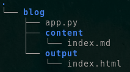

Welcome to 1morepi (reference to Euler's identity in case you're wondering), I'm Sourav Bhattacharya and this my blog, although I'm no professional programmer, I love to code and fiddle around with python. This blog will mostly be about programming.
I had this idea why not start this blog as a project in itself. That's why I have decided to make a static site generator using Python and we will use it to generate this blog.
My idea is to build the generator step by step and version the app and use our blog as a demo for each version. All the versions are available on Github and have their own pages so that
readers and can follow and see for themselves how are things working. This project could be really valuable for beginners as it involves the use of python modules and file operations. Readers will also get to know how static site generators work.
Let's get started!
We'll start with a simple md to html converter, yes, we'll use markdown for content. Let's call this version 0.0 (it's my project, I can name the versions however I like).
The idea is to use a directory which will contain the generated html files, let's name it "output" and a directory "content" which will contain, well, the content. We'll also need an http server to view the generated pages in our browser locally. Python's http server is enough for this. And our first page will be "index.html". That's all for the version 0.0. Here's the final directory structure for our version 0.0:

Create the above directory structure and write your code in app.py.
We're going to use Python's markdown module to convert md files to html files. Here's how the markdown module will help:
import markdown
html = markdown.markdown(content) # the variable html contains the converted text from the input "content"
We need to read the files in the content directory and write them to html files in the output directory. We're going to use basic Python file operation to read contents from a directory:
with open('content/index.md', 'r') as f:
# asuming that index.md is present in content directory and we are in the root directory of the project folder
content=(f.read()) # variable to contain everything in our index file
Now, let's convert the content to html and write it as an html file using the technique used before:
import markdown
with open('content/index.md', 'r') as f:
# asuming that index.md is present in content directory and we are in the root directory of the project folder
content=(f.read()) # variable to contain everything in our index file
html = markdown.markdown(content) # the variable html contains the converted text from the input "content"
with open('output/index.html', 'w') as f:
f.write(html) #writes the content in html variable to our desired file
If we want our images to show up on our generated html page, we have to copy the image files to the ouput directory for the html file to detect it. We can use the python os and shutil modules to help us out: import shutil import os
source_dir = "content"
dest_dir = "output/images"
# Copy all image files
for filename in os.listdir(source_dir):
if filename.lower().endswith((".png", ".jpg", ".jpeg", ".gif", ".webp")):
src_path = os.path.join(source_dir, filename)
dst_path = os.path.join(dest_dir, filename)
shutil.copy2(src_path, dst_path)
The working of the code above is pretty straightforward.
The desired output files should now be genarated after running the code above. You can now view the results in your browser.
cd output
python -m http.server
Then open your browser and go to http://localhost:8000